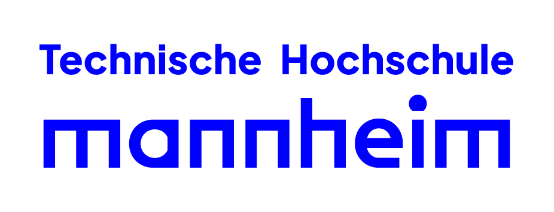

Business Informatics Student | SAP & Coding Enthusiast
Business Informatics Student
I'm a 2nd-year business informatics student passionate about bridging business processes with technology solutions. My academic journey has equipped me with both technical expertise and business acumen to develop systems that drive operational efficiency.
Currently collaborating with Schwarz digits to analyze and optimize their business processes.
Explored navigation, controlling, and materials management in SAP S/4HANA through academic case studies.
Full-stack website for online food ordering and employee shift management, developed as a group project.
Digital flight logbook application developed by a team of 5 for a professor (hobby pilot) following full software development lifecycle processes.
Our team followed an academic software engineering approach:
Note: All documents are in German. Contributors anonymized as "participants".
First-semester Java application implementing classic game to demonstrate OOP principles.

Technische Hochschule Mannheim
September 2023 - Present
Gymnasium Riedberg
August 2014 - June 2023